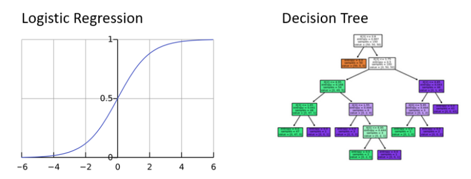
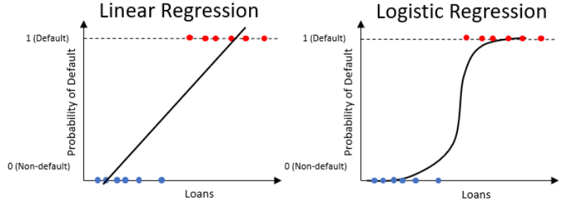
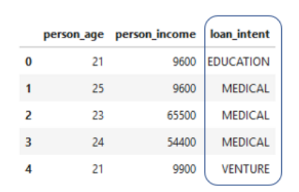
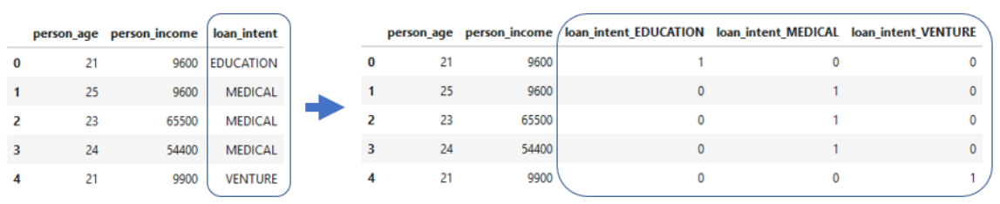
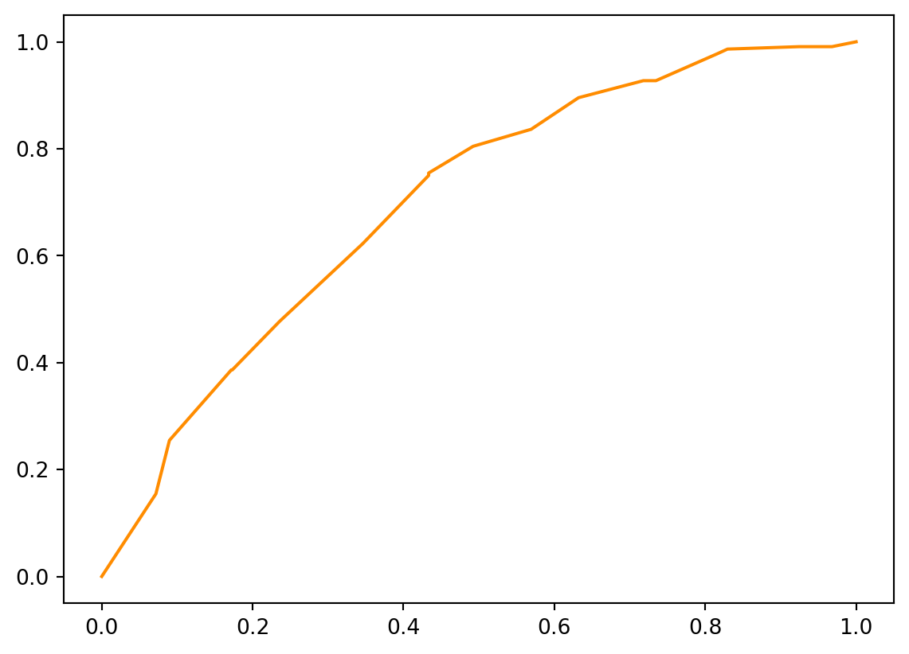
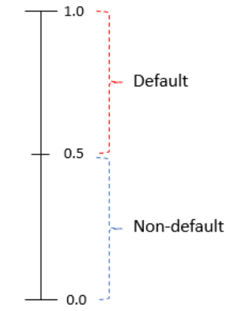
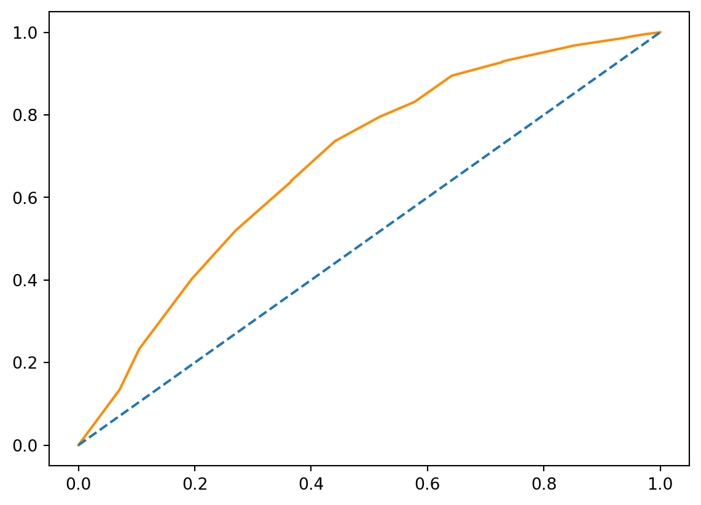
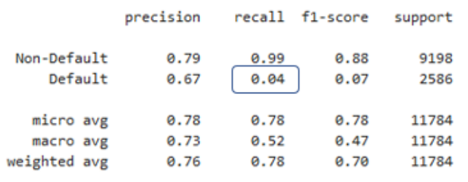
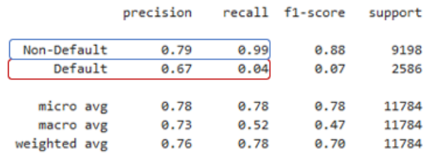
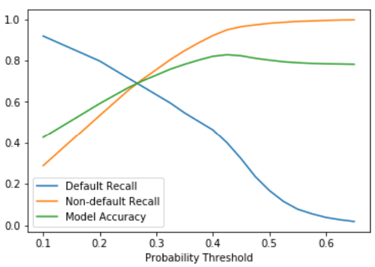

from sklearn.linear_model import LogisticRegression2 Regresión logistica para incumplimiento
Una vez que los datos del préstamo estén completamente preparadas, analizaremos el modelo de regresión logística, que es un estándar en la modelización de riesgos. Entenderemos los componentes de este modelo y cómo calificar su desempeño. Una vez que hayamos creado predicciones, podemos explorar el impacto financiero de utilizar este modelo.
2.1 Regresión logística para la probabilidad de incumplimiento
Ahora que ya hemos eliminado tanto valores atípicos como los datos faltantes de nuestro conjunto de datos, podemos comenzar a modelar para predecir la probabilidad de incumplimiento.
2.1.1 Probabilidad de incumplimiento
Recuerde que la probabilidad de incumplimiento es la probabilidad de que alguien no pague un préstamo. Esto se expresa como una probabilidad que es un valor entre cero y uno. Estas probabilidades están asociadas con nuestra columna de estado del préstamo, donde un 1 es un incumplimiento y un 0 es un no incumplimiento.
2.1.2 Predecir probabilidades
Para obtener estas probabilidades, entrenamos modelos de aprendizaje automático en nuestras columnas de datos crediticios, conocidas como características, para que los modelos aprendan a usar los datos para predecir las probabilidades.
| Probabilidad de incumplimiento | Interpretación | Predicción loan_status |
|---|---|---|
| 0.4 | Poco probable que incumpla | 0 |
| 0.90 | Es muy probable que incumpla | 1 |
| 0.1 | Es muy poco probable que incumpla | 0 |
Este tipo de modelos se conocen como modelos de clasificación, donde la clase es predeterminada o no predeterminada. En la industria se utilizan frencuentemente dos modelos. Se trata de regresiones logísticas y árboles de decisión. Ambos modelos pueden predecir la probabilidad de incumplimiento y decirnos qué tan improbable es cada columna para las predicciones.

2.1.3 Regresión Logística
La regresión logística es como una regresión líneal pero solo produce un valor entre 0 y 1.
\[ \underbrace{Y = \beta_0 + (\beta_1*x_1) + (\beta_2*X_2) + . . . }_{\mbox{Regresión Lineal}} \hspace{1cm} \underbrace{P(loan_status = 1) = \frac{1}{1 + e^{-Y}}}_{\mbox{Regresión Logística}} \]
Observe que la ecuación de la regresión líneal es en realidad parte de la regresión logística. Las regresiones logísticas funcionan mejor con los datos cuando lo que determina un incumplimiento o no incumplimiento puede variar mucho.

Piense aquí en la intersección con el eje \(y\), que son las probabilidades logarítmicas de no incumplimiento. Esta es otra forma de expresar la probabilidad general de no incumplimiento.
2.1.4 Entrenar una regresión logística
En este curso, utilizamos la regresión logística dentro de scikit learn.
El uso del modelo es fácil. Como cualquier función, puedes pasar parámetros o no. El parámetro del solucionador es un optimizador, al igual que el solucionador en Excel. LBFGS es el valor predeterminado.
clf_logistic = LogisticRegression(solver = "lbfgs")Para entrenar el modelo, llamamos al método de ajuste (fit). Dentro del método, debemos proporcionar al modelo columnas de entrenamiento (training_columns) y etiquetas de entrenamiento (training_labels). Usamos ravel de numpy para hacer que las etiquetas sean una matriz unidimensional en lugar de un marco de datos. En nuestros datos crediticios, las columnas de capacitación son todas las columnas excepto el estado del préstamo. El estado del préstamo contiene las etiquetas.
2.1.5 Entrenamiento y prueba
Generalmente, en el Machine Learning, dividimos todo nuestro conjunto de datos en dos conjuntos de datos individuales. Son el conjunto de entrenamiento (train)y el conjunto de prueba (test).
| Subconjunto de datos | Uso | Porción |
|---|---|---|
| Train | Aprenda de los datos para generar predicciones | 60% |
| Test | pruebe el aprendizaje con nuevos datos. | 40% |
Usamos la mayoría de los datos para entrenar nuestros modelos, para que aprendan tanto como sea posible de los datos. Nuestro conjunto de pruebas se utiliza para ver cómo reacciona nuestro modelo a nuevos datos que no ha visto antes. Esto es como si los estudiantes aprendieran en la escuela. Aprenderán hechos de un tema y serán evaluados sobre diferentes hechos de ese mismo tema. De esta manera podemos evaluar su dominio del tema.
2.1.6 Crear los conjuntos de entrenamiento y prueba
Lo primero que hacemos es separar nuestros datos en columnas y etiquetas de entrenamiento.
import pandas as pd
cr_loan = pd.read_csv("cr_loan2.csv")
X = cr_loan.drop("loan_status", axis = 1)
y = cr_loan[["loan_status"]]Aquí, lo hemos asignado como X e \(y\). Una vez hecho esto, usamos la función train_test_split() den tren de prueba dentro del paquete scikit-learn. Echemos un vistazo al código.
import numpy as np
from sklearn.model_selection import train_test_split
X_train, X_test, y_train, y_test = train_test_split(X, y, test_size= .4,random_state=123)¿Recuerda que dije que necesitamos columnas de entrenamiento y etiquetas para nuestro modelo? Lo necesitamos tanto para el conjunto de entrenamiento como para el conjunto de prueba, que se crean fácilmente con una línea de código. Dentro de esta función, establecemos el porcentaje de los datos que se utilizarán como conjunto de prueba (test_size)y un número utilizado como semilla aleatoria (random_state) para la reproductibilidad.
2.1.7 Practica
Creemos los conjuntos de datos \(X\) e \(y\)
cr_loan_clean = pd.read_csv("cr_loan_w2.csv")
X = cr_loan_clean[["loan_int_rate"]]
y = cr_loan_clean[["loan_status"]]Ahora creamos y ajustamos un modelo de regresión logística a los datos de entrenamiento y llamemoslo clf_logistic_single.
clf_logistic_single = LogisticRegression(solver ='lbfgs')
clf_logistic_single.fit(X, np.ravel(y))LogisticRegression()In a Jupyter environment, please rerun this cell to show the HTML representation or trust the notebook.
On GitHub, the HTML representation is unable to render, please try loading this page with nbviewer.org.
LogisticRegression()
Imprimamos los parámetros del modelo
print(clf_logistic_single.get_params()){'C': 1.0, 'class_weight': None, 'dual': False, 'fit_intercept': True, 'intercept_scaling': 1, 'l1_ratio': None, 'max_iter': 100, 'multi_class': 'auto', 'n_jobs': None, 'penalty': 'l2', 'random_state': None, 'solver': 'lbfgs', 'tol': 0.0001, 'verbose': 0, 'warm_start': False}Imprimimos la intersección del modelo
print(clf_logistic_single.intercept_)[-4.45785901]2.1.8 Regresión logística multivariada
Generalmente, no utilizará sólo loan_int_rate para predecir la probabilidad de incumplimiento. Querrás utilizar todos los datos que tienes para hacer predicciones.
Con esto en mente, intentamos entrenar un nuevo modelo con diferentes columnas, llamadas características, a partir de los datos cr_loan_clean. ¿Se diferenciará este modelo del primero? Para ello, puede comprobar facilmente el .intercept_ de la regresión logística. Recuerde que esta es la intersección y de la función y las probabilidades logarítmicas generales de no incumplimiento.
Creemos un nuevo conjunto de datos X con loan_int_rate y person_emp_length. Guárdelo como X_multi.
X_multi = cr_loan_clean[["loan_int_rate", "person_emp_length"]]Creemos un conjunto de datos y con solo loan_status.
y = cr_loan_clean[["loan_status"]]Ahora, creemos y entrenemos un nuevo modelo de Regresión logística.
clf_logistic_multi = LogisticRegression(solver='lbfgs').fit(X_multi, np.ravel(y))Luego, imprimamos la intersección del modelo
print(clf_logistic_multi.intercept_)[-4.21645549]2.1.8.1 Creación de conjuntos de entrenamiento y prueba
Comenzamos creando el conjunto de datos X utilizando la tasa de interés, la duración de empleo y los ingresos. Cree el conjunto y utilizando el estado de préstamo.
X = cr_loan_clean[['loan_int_rate','person_emp_length','person_income']]
y = cr_loan_clean[['loan_status']]Usemos test_train_split para crear el conjunto de entrenamiento y prueba.
X_train, X_test, y_train, y_test = train_test_split(X, y, test_size=.4, random_state=123)Luego creamos y adaptamos el modelo de regresión logística.
clf_logistic = LogisticRegression(solver='lbfgs').fit(X_train, np.ravel(y_train))Por último, imprimimos los coeficientes del modelo
print(clf_logistic.coef_)[[ 1.28517496e-09 -2.27622202e-09 -2.17211991e-05]]2.2 Predecir la probabilidad de incumplimiento
Hasta ahora, hemos entrenado una regresión logística con nuestros datos crediticios y hemos analizado algunos atributos del modelo. Ahora, analicemos la estructura del modelo y cómo crear predicciones.
2.2.1 Coeficientes de regresión logística
En el ejercicio anterior, vimos los siguientes interceptos y coeficientes para nuestro modelo. Estos coeficientes, determinan la importancia de cada columna. Estos valores son parte de la fórmula de regresión logística que calcula la probabilidad de incumplimiento que vemos aquí.
\[ P(loan_status = 1) = \frac{1}{1 + e^{-(-4.22 + (1.29e^{-09}*int\_rate) + (-2.28e^{-09}*Emp\_Length) + (-2.17e^{-05}*Income))}} \]
Cada coeficiente se multiplica por los valores de la columna y luego se suma junto con la intersección. Luego, solamente se realiza la sustitución en el modelo. El resultado será la probabilidad de incumplimiento.
2.2.2 Interpretación de coeficientes
Consideremos la duración de empleo (emp_length) como ejemplo. Suponga que:
Intercepto = \(-1.02\)
coeficiente para employment_length = \(-0.056\)
Lo que este coeficiente nos dice son las probabilidades logarítmicas de no incumplimiento. Esto significa que por cada año de aumento en la duración del empleo, la persona tiene menos probabilidad de incumplimiento por un factor del coeficiente.
Digamos que tenemos 3 valores para la duración del empleo y queremos saber cómo afecta nuestra probabilidad de incumplimiento al observar los coeficientes.
| Intercept | person_emp_length | valor*coef | probability of default |
|---|---|---|---|
| -1.02 | 10 | (10*-0.06) | 0.17 |
| -1.02 | 11 | (11*-0.06) | 0.16 |
| -1.02 | 12 | (12*-0.06) | 0.15 |
Lo que vemos aquí es que cuanto mayor es la duración del empleo de una persona, es menos probable que incumpla.
2.2.3 Usar columnas no numéricas
Ya que estamos hablando de números, vale la pena mencionar que hasta ahora solo hemos usado columnas numéricas para entrenar modelos. Nuestros datos tamboién contienen columnas no numéricas, como la intención de préstamo, que utiliza palabras para describir cómo la persona planea usar el dinero que le prestamos.
cr_loan["loan_intent"]0 PERSONAL
1 EDUCATION
2 MEDICAL
3 MEDICAL
4 MEDICAL
...
32576 PERSONAL
32577 PERSONAL
32578 HOMEIMPROVEMENT
32579 PERSONAL
32580 MEDICAL
Name: loan_intent, Length: 32581, dtype: objectEn Python, a diferencia de R, los modelos de aprendizaje automático no saben cómo usar estos valores no numéricos. Por lo tanto, tenemos que realizar una operación llamada codificación one-hot antes de poder usarlos.
2.2.4 Codificación one-hot
La codificación one-hot suena complicada, pero es realmente simple. La idea principal es representar una cadena con un valor numérico. Así es como funciona. Pensemos en la columna de intención de préstamo donde cada préstamo tiene su propio valor de intención como una cadena.

Esta muestra tiene eduación, medicina y riesgo.
Con la codificación one-hot, obtenemos un nuevo conjunto de columnas donde cada valor de la intención de préstamo ahora es su propia columna.

Note que cada nueva columna se crea separando los préstamos con cada valor de intención y haciendo que el valor de la nueva columna sea 0 o 1. Por ejemplo, si la intención del préstamo era eduación, ahora se representa con un 1 en la columna de educación, aahora se representa con un 1 en la columna de eduación de intención del préstamo. De esta manera, hay un valor candente.
2.2.5 Función Get dummies
Para codificar nuestras columnas de cadena, usamos la función get_dummies() que pertenece a pandas. Primero, separamos las columnas numéricas y no numéricas de los datos en dos conjuntos.
# separamos las columnas numéricas
cred_num = cr_loan.select_dtypes(exclude = ["object"])
cred_num.head()| person_age | person_income | person_emp_length | loan_amnt | loan_int_rate | loan_status | loan_percent_income | cb_person_cred_hist_length | |
|---|---|---|---|---|---|---|---|---|
| 0 | 22 | 59000 | 123.0 | 35000 | 16.02 | 1 | 0.59 | 3 |
| 1 | 21 | 9600 | 5.0 | 1000 | 11.14 | 0 | 0.10 | 2 |
| 2 | 25 | 9600 | 1.0 | 5500 | 12.87 | 1 | 0.57 | 3 |
| 3 | 23 | 65500 | 4.0 | 35000 | 15.23 | 1 | 0.53 | 2 |
| 4 | 24 | 54400 | 8.0 | 35000 | 14.27 | 1 | 0.55 | 4 |
# Separamos las columnas no numéricas
cred_cat = cr_loan.select_dtypes(include = ["object"])
cred_cat.head()| person_home_ownership | loan_intent | loan_grade | cb_person_default_on_file | |
|---|---|---|---|---|
| 0 | RENT | PERSONAL | D | Y |
| 1 | OWN | EDUCATION | B | N |
| 2 | MORTGAGE | MEDICAL | C | N |
| 3 | RENT | MEDICAL | C | N |
| 4 | RENT | MEDICAL | C | Y |
Luego usamos la función get_dummies() para codificar solo las columnas no numéricas.
# One-hot a columnas no numéricas
cred_cat_onehot = pd.get_dummies(cred_cat)
cred_cat_onehot.head()| person_home_ownership_MORTGAGE | person_home_ownership_OTHER | person_home_ownership_OWN | person_home_ownership_RENT | loan_intent_DEBTCONSOLIDATION | loan_intent_EDUCATION | loan_intent_HOMEIMPROVEMENT | loan_intent_MEDICAL | loan_intent_PERSONAL | loan_intent_VENTURE | loan_grade_A | loan_grade_B | loan_grade_C | loan_grade_D | loan_grade_E | loan_grade_F | loan_grade_G | cb_person_default_on_file_N | cb_person_default_on_file_Y | |
|---|---|---|---|---|---|---|---|---|---|---|---|---|---|---|---|---|---|---|---|
| 0 | 0 | 0 | 0 | 1 | 0 | 0 | 0 | 0 | 1 | 0 | 0 | 0 | 0 | 1 | 0 | 0 | 0 | 0 | 1 |
| 1 | 0 | 0 | 1 | 0 | 0 | 1 | 0 | 0 | 0 | 0 | 0 | 1 | 0 | 0 | 0 | 0 | 0 | 1 | 0 |
| 2 | 1 | 0 | 0 | 0 | 0 | 0 | 0 | 1 | 0 | 0 | 0 | 0 | 1 | 0 | 0 | 0 | 0 | 1 | 0 |
| 3 | 0 | 0 | 0 | 1 | 0 | 0 | 0 | 1 | 0 | 0 | 0 | 0 | 1 | 0 | 0 | 0 | 0 | 1 | 0 |
| 4 | 0 | 0 | 0 | 1 | 0 | 0 | 0 | 1 | 0 | 0 | 0 | 0 | 1 | 0 | 0 | 0 | 0 | 0 | 1 |
Unimos los dos conjuntos y el resultado es un conjunto de datos completo que esta listo para aplicarle el Machine Learning.
cr_loan_prep = pd.concat([cred_num, cred_cat_onehot], axis = 1)
cr_loan_prep.head()| person_age | person_income | person_emp_length | loan_amnt | loan_int_rate | loan_status | loan_percent_income | cb_person_cred_hist_length | person_home_ownership_MORTGAGE | person_home_ownership_OTHER | ... | loan_intent_VENTURE | loan_grade_A | loan_grade_B | loan_grade_C | loan_grade_D | loan_grade_E | loan_grade_F | loan_grade_G | cb_person_default_on_file_N | cb_person_default_on_file_Y | |
|---|---|---|---|---|---|---|---|---|---|---|---|---|---|---|---|---|---|---|---|---|---|
| 0 | 22 | 59000 | 123.0 | 35000 | 16.02 | 1 | 0.59 | 3 | 0 | 0 | ... | 0 | 0 | 0 | 0 | 1 | 0 | 0 | 0 | 0 | 1 |
| 1 | 21 | 9600 | 5.0 | 1000 | 11.14 | 0 | 0.10 | 2 | 0 | 0 | ... | 0 | 0 | 1 | 0 | 0 | 0 | 0 | 0 | 1 | 0 |
| 2 | 25 | 9600 | 1.0 | 5500 | 12.87 | 1 | 0.57 | 3 | 1 | 0 | ... | 0 | 0 | 0 | 1 | 0 | 0 | 0 | 0 | 1 | 0 |
| 3 | 23 | 65500 | 4.0 | 35000 | 15.23 | 1 | 0.53 | 2 | 0 | 0 | ... | 0 | 0 | 0 | 1 | 0 | 0 | 0 | 0 | 1 | 0 |
| 4 | 24 | 54400 | 8.0 | 35000 | 14.27 | 1 | 0.55 | 4 | 0 | 0 | ... | 0 | 0 | 0 | 1 | 0 | 0 | 0 | 0 | 0 | 1 |
5 rows × 27 columns
2.2.6 Prediciendo el futuro
Una vez nuestro modelo está entrenado, utilizamos el método predict_proba() en datos de prueba para hacer predicciones. Esto crea un conjunto de probabilidades de no incumplimiento e incumplimiento. Claramente el resultado será una serie de números entre 0 y 1.
2.2.7 Práctica
Imprimamos las nuevas columnas del conjunto de datos cr_loan_prep
print(cr_loan_prep.columns)Index(['person_age', 'person_income', 'person_emp_length', 'loan_amnt',
'loan_int_rate', 'loan_status', 'loan_percent_income',
'cb_person_cred_hist_length', 'person_home_ownership_MORTGAGE',
'person_home_ownership_OTHER', 'person_home_ownership_OWN',
'person_home_ownership_RENT', 'loan_intent_DEBTCONSOLIDATION',
'loan_intent_EDUCATION', 'loan_intent_HOMEIMPROVEMENT',
'loan_intent_MEDICAL', 'loan_intent_PERSONAL', 'loan_intent_VENTURE',
'loan_grade_A', 'loan_grade_B', 'loan_grade_C', 'loan_grade_D',
'loan_grade_E', 'loan_grade_F', 'loan_grade_G',
'cb_person_default_on_file_N', 'cb_person_default_on_file_Y'],
dtype='object')2.2.8 Recordemos como predecir la probabilidad de incumplimiento
cr_loan_clean = pd.read_csv("cr_loan_w2.csv")
X = cr_loan_clean[["loan_intent_DEBTCONSOLIDATION", "loan_intent_EDUCATION", "loan_intent_HOMEIMPROVEMENT", "loan_intent_MEDICAL", "loan_intent_PERSONAL","loan_intent_VENTURE","person_home_ownership_MORTGAGE","person_home_ownership_OTHER","person_home_ownership_OWN", "person_home_ownership_RENT"]]
y = cr_loan_clean[["loan_status"]]
X_train, X_test, y_train, y_test = train_test_split(X, y, test_size= .4,random_state=123)Entrenemos el modelo de regresión logistica con los datos de entrenamiento.
clf_logistic = LogisticRegression(solver='lbfgs').fit(X_train, np.ravel(y_train))Ahora creamos predicciones de probabilidad para el estado del prestamó utilizando datos de prueba.
preds = clf_logistic.predict_proba(X_test)Luego, creemos un marco de datos de las predicciones y valores reales
preds_df = pd.DataFrame(preds[:,1][0:1000], columns = ['prob_default'])
true_df = y_test.head(n=1000)Por último, concatenamos e imprimimos los marcos de datos para comparación.
print(pd.concat([true_df.reset_index(drop = True), preds_df], axis = 1)) loan_status prob_default
0 1 0.401990
1 1 0.401990
2 0 0.224612
3 0 0.224612
4 1 0.255862
.. ... ...
995 1 0.224612
996 0 0.166742
997 0 0.255862
998 0 0.224612
999 0 0.116630
[1000 rows x 2 columns]2.3 Desempeño del modelo de crédito
Ya vimos predicciones de probabilidad de incumplimiento frenta a valores reales del estado del préstamo, pero ¿cómo analizamos el desempeño de nuestro modelo?
2.3.1 Puntuación de la presición (accurary) del modelo
La forma más sencilla de analizar el rendimiento es con el accuracy. La precisión es el número de predicciones correctas dividido por el número total de predicciones.
\[ accuracy = \frac{\mbox{número total de predicciones correctas}}{\mbox{total de predicciones}} \]
Una forma de comprobar esto es utilizar el método de scikit-learn en la regresión logística.
clf_logistic.score(X_test, y_test)0.7805498981670062Esto se utiliza en el modelo entrenado y devuelve la precisión promedio del conjunto de prueba. El uso del método de puntuación mostrará esta precisión como porcentaje. En este ejemplo, nos dice que el 78.1% de los préstamos se predijeron correctamente.
2.3.2 Gráficos de curvas ROC
Los gráficos ROC son una excelente manera de visualizar el rendimienrto de nuestro modelo. Trazan la tasa sde verdaderos positivos, el porcentaje de impagos pronósgticados correctamente, frente a la tasa de falson positivos, el porcentaje de impagos predichos incorrectamente.
Usando la función roc_curve de scikit.learrn, creamos dos valores y los umbrales todos a la vez. A partir de ahí utilizamos un gráfico de lineas normal para ver los resultados. La línea azul punteada representa una predicción aleatoria y la línea naranja representa las predicciones de nuestro modelo.
from sklearn.metrics import roc_curve
resultados = pd.concat([true_df.reset_index(drop = True), preds_df], axis = 1)
prob_default = resultados["prob_default"]
fallout, sensitivity, thresholds = roc_curve(y_test.head(n=1000),prob_default)
import matplotlib.pyplot as plt
plt.plot(fallout, sensitivity, color = "darkorange")
Los gráficos ROC se interpretan obsevando qué tan lejos está la curva del modelo de la linea azul punteada que se muestra aquí, que representa la predicción aleatoria. Este movimiento de alejamiento de la línea se llama elevación. Cuanto más elevación tengamos, mayor será el área bajo la curva. El AUC es el aréa calculada entre la curva y las predicción aleatoria. Este es un indicador directo de qué tan bien nuestro modelo hace predicciones.
2.3.3 Umbrales Predeterminados
Para analizar más a fondo el rendimiento, debemos decidir qué rango de probabilidad es un incumplimiento y cuál no es un incumplimiento. Digamos que decidimos que cualquier probabilidad superior a 0.5 es un valor predeterminado, y cualquier probabilidad inferior a eso no es un valor predeterminado.

2.3.4 Establecer un umbral
Una vez definido el umbral, debemos volver a etiquetar nuestros préstamos en función de ese umbral. Para eso, primero necesitaremos crear una variable para almacenar las probabilidades predichas.
preds = clf_logistic.predict_proba(X_test)
preds_df = pd.DataFrame(preds[:,1], columns = ['prob_default'])
preds_df["loan_status"] = preds_df["prob_default"].apply(lambda x:1 if x > 0.5 else 0)Luego podemos crear un marco de datos a partir de la segunda columna que contiene las probabilidades de incumplimiento. Luego aplicamos una función rápida para asignar un valor de 1 si la probabilidad de incumplimiento está por encima de nuestro umbral de 0.5. La lambda está ahí solo para decirle a Python que queremos usar una función única sin definirla. El resultado de esto es un marco de datos con nuevos valores para el estado del préstamo según nuestro umbral.
preds_df.head()| prob_default | loan_status | |
|---|---|---|
| 0 | 0.401990 | 0 |
| 1 | 0.401990 | 0 |
| 2 | 0.224612 | 0 |
| 3 | 0.224612 | 0 |
| 4 | 0.255862 | 0 |
2.3.5 Informes de clasificación crediticia
Otra función realmente útil para evaluar nuestros modelos es la función informes de clasificación classification_report() de scikit.learn. Esto nos mostrará varias métricas de evaluación diferentes a la vez. Usamos esta función para evaluar nuestro modelo usando nuestros valores verdaderos para el estado del préstamo almacenado en el conjunto y_test, y nuestros valores de estado del préstamo previstos a partir de nuestra regresión logística y el umbral que establecimos.
import warnings
warnings.filterwarnings('ignore')
from sklearn.metrics import classification_report
target_names = ['Non-Default', 'Default']
classification_report(y_test, preds_df['loan_status'], target_names=target_names)' precision recall f1-score support\n\n Non-Default 0.78 1.00 0.88 9198\n Default 0.00 0.00 0.00 2586\n\n accuracy 0.78 11784\n macro avg 0.39 0.50 0.44 11784\nweighted avg 0.61 0.78 0.68 11784\n'Hay dos métricas realmente útiles en esta tabla, y son la precisión y la recuperación.
2.3.6 Seleccionar métricas de clasificación
A veces, después de generar el informe, desea seleccionar o almacenar valores específicos dentro del informe. Para hacer esto, puede utilizar la función precision_recall_fscore_support(). Con esta función, podemos recuperar valores predeterminados subconjuntos del informe como lo haríamos con cualquier matriz.
from sklearn.metrics import precision_recall_fscore_support
precision_recall_fscore_support(y_test, preds_df["loan_status"])[1][1]0.0Aquí seleccionamos el segundo valor del segundo conjunto.
2.3.7 Práctica
2.3.7.1 Informes de clasificación
Comencemos creando un marco de datos para las probabilidades de incumplimiento de
predsy llamelopreds_dfReasigne el estado del préstamo al umbral
Imprima el recuento de filas para el estado del préstamo
Por último, imprima el informe de metricas.
# Marco de probabilidades preds_df
preds_df = pd.DataFrame(preds[:,1], columns = ['prob_default'])
# umbral del estado del préstamo
preds_df['loan_status'] = preds_df['prob_default'].apply(lambda x: 1 if x > 0.50 else 0)
#recuento de filas
print(preds_df['loan_status'].value_counts())
# Reporte de metricas
target_names = ['Non-Default', 'Default']0 11784
Name: loan_status, dtype: int64print(classification_report(y_test, preds_df['loan_status'], target_names=target_names)) precision recall f1-score support
Non-Default 0.78 1.00 0.88 9198
Default 0.00 0.00 0.00 2586
accuracy 0.78 11784
macro avg 0.39 0.50 0.44 11784
weighted avg 0.61 0.78 0.68 11784
2.3.7.2 Seleccionar métricas del reporte
Imprimimos los dos primeros valores del informe
print(precision_recall_fscore_support(y_test,preds_df['loan_status'])[0])[0.7805499 0. ]2.3.7.3 Puntuación visual
Creé predicciones y almacenarlos en una variable preds
preds = clf_logistic.predict_proba(X_test)Imprima la puntuación (accuracy) del modelo
print(clf_logistic.score(X_test, y_test))0.7805498981670062Trazemos la curva ROC de las probabilidades de default
prob_default = preds[:, 1]
fallout, sensitivity, thresholds = roc_curve(y_test, prob_default)
plt.plot(fallout, sensitivity, color = 'darkorange')
plt.plot([0, 1], [0, 1], linestyle='--')
plt.show()
Calcular el AUC del modelo utilizando datos de prueba y probabilidades de incumplimiento y guárdelos en auc
from sklearn.metrics import roc_auc_score
auc = roc_auc_score(y_test, prob_default)
auc0.68622346278243682.4 Modelo de discriminación e impacto
Hemos analizado algunas formas de evaluar nuestra regresión logística. Hablamos más sobre los umbrales y su impacto en el rendimiento de la cartera.
2.4.1 Matrices de confusión
Otra forma de analizar el desempeño de nuestro modelo es con la matriz de confusión. Estos nos mostrará todas nuestras predicciones correctas e incorrectas sobre el estado del préstamo. La matriz de confusión tiene cuatro secciones:
verdaderos positivos,
falsos positivos,
falsos negativos,
verdaderos negativos
Hemos analizado la recuperación de valores predeterminados dentro de los informes de clasificación. Aquí se muestra esa fórmula y dónde reside en la matriz de confusión.
| Verdaderos positivodos (predicted = 0, Actual = 0) | Falsos positivos (predicted = 1, actual = 0) |
| Falsos Negativos (predicted = 0, Actual = 1) | Verdaderos positivos (predicted = 1, actual = 1) |
\[ \begin{eqnarray*} Precision(0) &=& \frac{TN}{TN + FN}\\[0.2cm] Precision(1) &=& \frac{TP}{TP + FP}\\[0.2cm] sensibilidad(0) &=& \frac{TN}{TN + FP}\\[0.2cm] sensibilidad(1) &=& \frac{TP}{TP + FN} \end{eqnarray*} \]
2.4.2 Retiro predeterminado para el estado del préstamo
La definición de recuperación predeterminada, tambien llamada sensibilidad, es la proporción de positivos reales predichos correctamente. Antes, recuperábamos este valor del informe de clasificación sin entender cómo se cálcula.

La sensibilidad se obtiene tomando el número de valores predeterminados verdaderos y dividiéndolo por la suma de los valores predeterminados verdaderos y los valores predeterminados previstos como no predeterminados.
2.4.3 Recordar el impacto de la cartera
Veamos el retiro de valores predeterminados resaltados en rojo en un informe de clasificación.

Este es un ejemplo de un informe de un modelo de regresión logística de bajo rendimiento. En este caso, la proporción de incumplimientos reales predichos por nuestro modelo fue sólo de 4%.
Imaginemos que tenemos 50,000 préstamos en nuestra cartera y cada unno de ellos tiene un monto total de préstamo de 50 dólares. Como se ve en el informe de clasificación, este modelo tiene un retiro por defecto del 4%.
| Monto Préstamo | Default Predicted/Not Predicted | Perdida estimada, por incumplimiento |
|---|---|---|
| 50 | 0.04/0.96 | (50000x0.96)x50 = $2,400,000 |
Entonces, eso significa que predijimos correctamente el 4% de los incumplimientos y predijimos incorrectamente el 96% de los incumplimientos. Si todos nuestros préstamos en default verdadero incumplieran ahora mismo, nuestra pérdida de la cartera sería de 2.4 millones de dólares. Esta pérdida sería algo que no planeamos y sería inesperada.
2.4.4 Recuperación, precisión y exactitud (accuracy)
Cuando se trata de métricas como recuperación, precisión y exactitud, puede resultar complicado encontrar un número óptimo para las tres como objetivo. Eche un vistazo a este gráfico de ejemplo de un modelo de regresión logística sobre los datos crediticios.

La línea azul, que es la recuperación predeterminada, comienza muy alta. Esto se debe a que si predecimos que todos los préstamos serán predeterminados, definitivamente predecimos todos nuestros incumplimientos correctamente. También puede ver que cuando la recuperación predeterminada es alta, la mayoría de las veces la recuperación no predeterminada es baja. Inicialmente, tenemos que determinar qué puntajes de cada uno son lo suficientemente buenos para establecer una línea de base para es desempeño.
2.4.5 Práctica
Reasignemos valores loan_status utilizando un umbral de 0.5 probabilidad de incumplimiento dentro de preds_df.
preds_df['loan_status'] = preds_df['prob_default'].apply(lambda x: 1 if x > 0.5 else 0)Imprimamos la matriz de confusión de los datos y_test y los nuevos valores del estado del préstamo.
from sklearn.metrics import confusion_matrix
print(confusion_matrix(y_test,preds_df['loan_status']))[[9198 0]
[2586 0]]Ahora, hagamos lo mismo, pero reasignando valores loan_status utilizando un umbral de 0.4
preds_df['loan_status'] = preds_df['prob_default'].apply(lambda x: 1 if x > 0.4 else 0)print(confusion_matrix(y_test,preds_df['loan_status']))[[8546 652]
[2238 348]]2.4.5.1 Veamos como afectan los umbrales al rendimiento
Reasignemos los valores loan_status utilizando el umbral 0.4.
preds_df['loan_status'] = preds_df['prob_default'].apply(lambda x: 1 if x > 0.4 else 0)Ahora almacenamos el número de valores predeterminados preds_df seleccionando el segundo valor del recuento de valorrs y guárdamos como num_default
num_defaults = preds_df['loan_status'].value_counts()[1]Obtenga la tasa de recuperación predeterminada de la matriz de clasificación y guárdela como default_recall
default_recall = precision_recall_fscore_support(y_test,preds_df['loan_status'])[1][1]